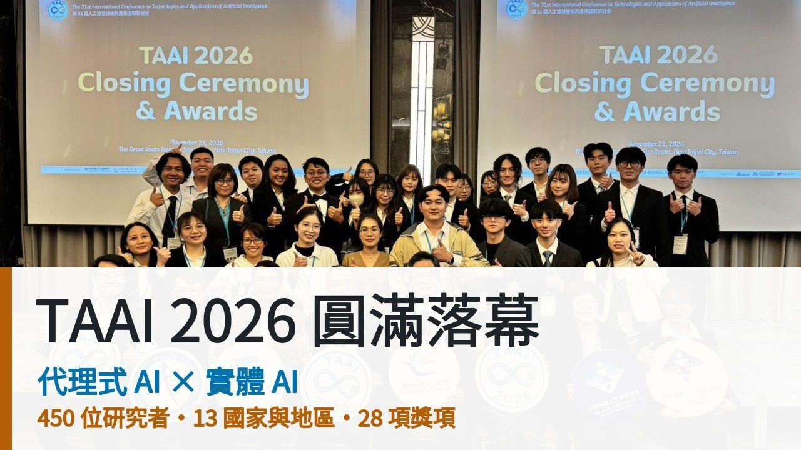
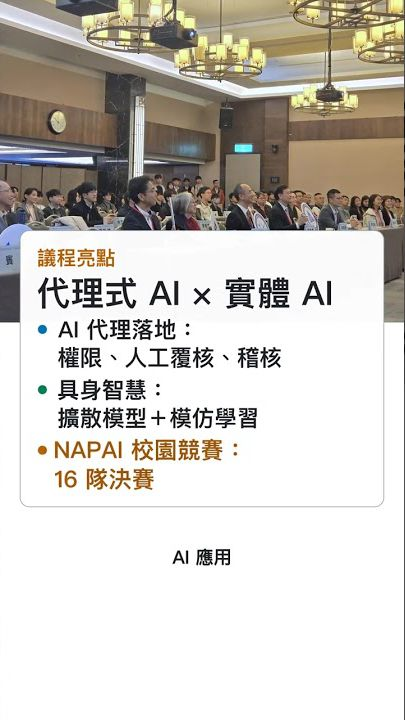
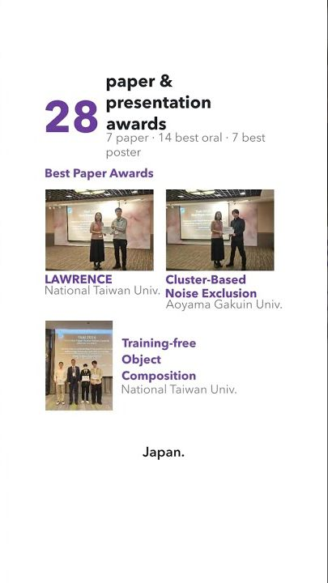

TAAI 2026 國際研討會新北圓滿落幕 聚焦代理式 AI、實體 AI 與跨域永續創新 28 項學術獎項揭曉
匯聚全球 13 個國家與地區、450 位論文作者，157 篇研究成果展現人工智慧創新能量，推動學術研究、產業應用與國際合作
新聞中心
TAAI 2026 的官方新聞稿、媒體報導與媒體資料。媒體引用請以新聞稿為準，採訪或索取資料請洽媒體聯絡窗口。
匯聚全球 13 個國家與地區、450 位論文作者，157 篇研究成果展現人工智慧創新能量，推動學術研究、產業應用與國際合作
TAAI 2026 的 90 秒新聞影片，有橫式（16:9）與直式短影音（Shorts，9:16）兩種版本，皆附中英字幕。媒體可直接以 YouTube 嵌入或連結使用；更多影片見 TAAI 2026 YouTube 頻道（外部網站，另開新分頁）。




依發布日期排列，連結至原始報導；報導內容版權屬各媒體所有。如您報導了 TAAI 2026，歡迎來信 taai2026org@gmail.com 提供連結。
媒體報導清單需要 JavaScript 才能顯示。